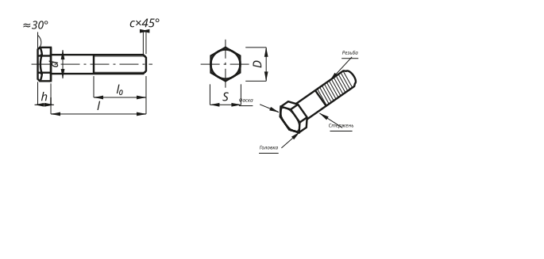

01 Выбор формата
// нарисуй — это пиксельный трейс учебного образца. Все неровности линий, штрихи и подписи
один-в-один как в учебнике. Используется как наглядное пособие: открыл, показал, все «био-человеки» понимают.
Не редактируется как параметрический чертёж.
Не редактируется как параметрический чертёж.

// начерти — параметрический SVG: реальные
Пригодно для производства.
<line>, <polygon>,
<circle>. Открывается в Illustrator / Inkscape / AutoCAD, редактируется.
Размеры d, l, l₀, h, S, D — переменные, можно подставить под любой типоразмер из ГОСТ 7798-70.
Пригодно для производства.
02 Сравнение
Одна и та же деталь — болт М8 × 40 по ГОСТ 7798-70. Размеры стандартные: d = 8 мм, l = 40 мм, S = 13 мм, h = 5.3 мм, D ≈ 0.95·S.
Демонстрирует главный принцип визуализации для Андрея:
- Нарисуй — когда нужна универсально понятная картинка (обучение, объяснение, шеринг).
- Начерти — когда нужны редактируемые размеры и соответствие ЕСКД (производство, КД).
Исходники SVG обоих форматов лежат в assets/img/ репозитория — можно скачать и использовать в своих задачах.